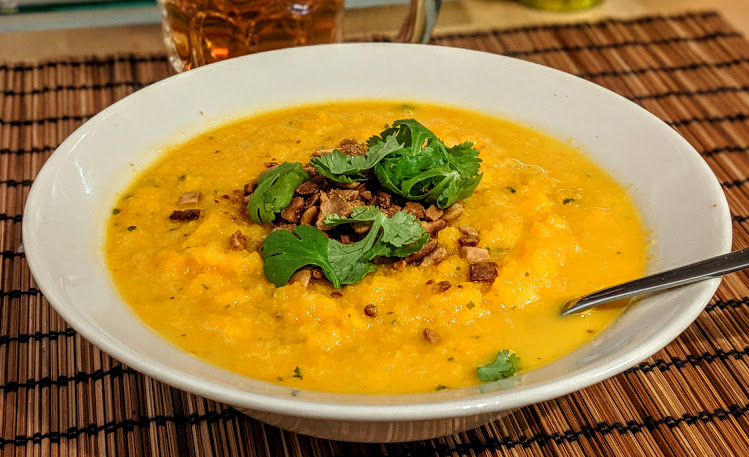

Velouté de carottes aux cacahuètes

Pour 6 personnes, ou 3-4 personnes si on en fait un plat principal :
- Un kilo de carottes
- 750mL de bouillon de légumes ou de poulet
- Une grosse cuillère à soupe de purée de cacahuètes
- Deux oignons
- Un petit bouquet de coriandre
- (Facultatif) Quelques cacahuètes
- Sel, poivre
- Éplucher les carottes et les oignons, les couper en gros morceaux, les mettre dans une casserole, et les recouvrir tout juste d'eau bouillante. Faire cuire le tout une demi-heure à feu moyen (il faut qu'il y ait des bulles et que les carottes ramolissent).
- Pendant ce temps, laver et émincer la coriandre. À la fin de la cuisson des carottes, ajouter les trois quarts de la coriandre avec la purée de cacahuètes dans la casserole, et mixer le tout jusqu'à ce que ça soit tout doux.
- Servir chaud, en saupoudrant du reste de coriandre et des cacahuètes grossièrement écrasées.